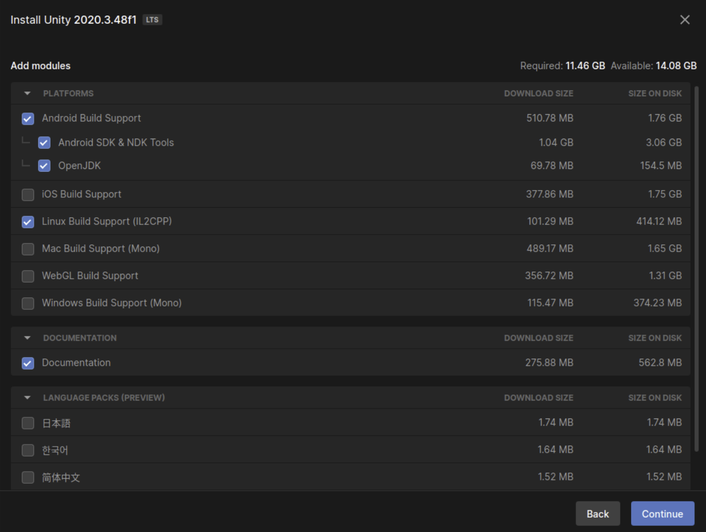

Teleop Setup Instructions
Set up Oculus headset
To be able to deploy apps from Unity, we need to set the headset into developer mode. This can only be done via the phone app.
- Download the Oculus app on your phone.
- The Meta account signed in as admin on the Oculus and the Meta account used in the app needs to be the same.
If you are not signed in as admin on the oculus headset, you need to reset the device by:
- Power off the device
- Power on while holding volume (-)
- Choose factory reset
- Connect to your Oculus from your phone by choosing “pair your headset” in the app.
- Join or create a Meta dev organization to get developer rights for you Meta account.
- Select your meta quest device in the app -> Headset settings -> Developer Mode -> on
- Restart headset
- In the headset -> go to settings -> system -> developer -> USB connection dialog
- Now connect USB-c cable to headset and pc
- You will see the following dialog pop up-> press allow
Set up Unity on Ubuntu:
- Install Unity Hub 3.0.0 When following the instructions, make sure to install 3.0.0 i.e: sudo apt-get install unityhub=3.0.0 https://docs.unity3d.com/hub/manual/InstallHub.html#install-hub-linux
- In Unity hub install editor 2020.3.48f1
- Select Android build support (Oculus quest 2 is an android device) 
Setting up Occulus in Unity
- Make a new 3D Core template project in Unity
- Add a plane and cube to the scene
- Import Oculus integration package
- Add to your assets in unity package web page (must be logged in to you acc) https://assetstore.unity.com/packages/tools/integration/oculus-integration-82022
- Open package manager in the unity editor (window -> package manager)
- Choose “My Assets” in the drop down menu
- Select Oculus Integration and hit Download
- Click Import
If prompted to cleanup:
- Select show assets
- Then select Upgrade
- restart (save)
- Sometimes it will find more to clean -> repeat until it starts without issues.
- If prompted to clean up -> do it.

- Fix issues found be Unity
- Press oculus symbol in the bottom right if a red dot is present:
- Press “fix all”
- Press fix all again.
- Press apply all for recommended actions
- The red/orange dot should disappear from the symbol bottom right
- Drag OVRPlayerController.prefab into the scene
- Connect your Oculus to the PC (confirm usb dialog in the headset)
- Set up build options
- Go to file -> build settings and switch to Android
- Switch platform This takes a while …
- Press on the red dot again and Fix all /apply all again Wait a while ….
- Select Run Device -> Oculus quest 2. If the Oculus doesn’t show up under Run Device, make sure sure you have confirmed USB debugging in the headset when connecting the USB cable. If USB debug prompt does not show up try:
- Disable developer mode from phone
- Restart Oculus
- Enable developer mode from phone
- Restart Oculus.
- Connect USB cable.
- Click allow USB access in the headset.
- Confirm USB debugging in the headset.
Press build and run (save apk file)
You might get some build errors :
Check the oculus symbol in the bottom right and press fix until it diapers if errors consist:
If the error is related to the JDK, Android SDK & NDK (Unity installs some but for some Unity distros (like 18) it’s not working and has to be adjusted), we need to install the right version of these. You can set the JDK, SDK, NDK under “edit -> preferences -> External tools.
To install Android JDK, SDK, & NDK (Ubuntu 18.04):
Install JDK
- install jdk sudo apt install openjdk-8-jdk
- Check you have correct version java -version
- Select it in unity.
Install SDK
- Download android sdk: wget https://dl.google.com/android/repository/sdk-tools-linux-4333796.zip Unzip: unzip sdk-tools-linux-4333796.zip -d androidSDK/
- Now we have to add it to the bashrc to be able to install some additional packages sudo nano ~/.bashrc Add this line to the file (replace username with your username (no “[]”)): export PATH=/home/[username]/androidSDK/tools/:/home/[username]/androidSDK/tools/bin:$PATH
- In a new terminal (or sources ./bashrc) go for: sdkmanager --list There should be bunch of stuff if not check the path again and make sure to have sourced or new terminal
- Now install 2 packages sdkmanager "build-tools;32.0.3" Accept the licence with y Install second one: sdkmanager "platform-tools"
- Select the androidSDK folder in unity: (mcw will be your username)
Install NDK
- Download the NDK r19c from here: https://github.com/android/ndk/wiki/Unsupported-Downloads#r19c Direct link: https://dl.google.com/android/repository/android-ndk-r19c-linux-x86_64.zip From terminal: wget https://dl.google.com/android/repository/android-ndk-r19c-linux-x86_64.zip
- Unzip: unzip android-ndk-r19c-linux-x86_64 -d androidNDK/
- When selecting the folder in unity (android-ndk-r19c) you will see this error:
Manually change verision- Navigate to the folder and open the file “source.properties”
- Change Pkg.Revision to 19.0.5232133
- Now selection in unity will work

Now you should be able to “Build and Run” your app on the Occulus Quest 2 I.e. you will see a white plane and cube and can walk around using the controllers and look around via headset movements
ROS to Unity connection
- Install ROS by following http://wiki.ros.org/melodic/Installation/Ubuntu (cahnge to your version if needed -> this guide continuous with melodic)
- Follow these steps to get the robotics tab in unity. Only install the ros tcp connector package! https://github.com/Unity-Technologies/Unity-Robotics-Hub/blob/main/tutorials/quick_setup.md
- It will look like this afterward (robotic tab appears)
- Create a ROS workspace
- Create a workspace and src dir
mkdir -p ~/my_ws/src - Init workspace
catkin_init_workspace src
- Create a workspace and src dir
- Download the ros-tcp-endpoint package in your ros src folder:
cd ~/my_ws/src git clone https://github.com/Unity-Technologies/ROS-TCP-Endpoint.git Clone the quest2_ros_msg package from TODO into your src. For now all files are here: https://drive.google.com/drive/folders/1VWmBWDII7Pwz979tciZBF-KVvHwq8s5v?usp=sharing
Build with catkin build
cd ~/my_ws/ catkin build- Build ROS messaes in Unity. Go to robotics -> generate ROS Messages and set Ros message path to your quest2_ros_msg location. Press build 3 msgs
 You can see the unity message code thats been generated in your project:
If you make a new message type do it in the ques2_ros_msg package and then build it in unity as described above
You can see the unity message code thats been generated in your project:
If you make a new message type do it in the ques2_ros_msg package and then build it in unity as described above
Moving a cube in VR over ros example
Now we will make a simple example that shows how to move a cube in vr mimicking your right controller movements when the “A” button is pressed over ROS
Add scripts for ROS communication
- Get the teleop and cube_move unity scripts.
- Copy it into the assets folder or, Make a new c# script in unity -> right click in assets create->c# script
- Draw the teleop script and the cube move script onto the plane:
- Name the cube in the scene “test_box”:
- Add ridgitbody to test_box (“Add component” -> “Rigidbody”) and disable gravity
Configuring communication between ROS and headset:
- Make sure both devices (ROS pc and quest2) are in the same network
- Set rosIP Master etc:
- In ROS terminal do:
export ROS_MASTER_URI=http://<pc that runs ros ip>:11311 export ROS_IP=<pc that runs ros ip>roslaunch ros_tcp_endpoint endpoint.launch tcp_ip:=<pc that runs ros ip> tcp_port:=10000 - In unity go to robotics->ROS settings and enter that ip in ros IP address:

- In ROS terminal do:
- Build and run the app. You can see if the connection is successful in the ros tcp terminal:
- Now in a new terminal set make the same ros_master and ros_IP settings and then run:
rosrun quest2_ros_msg cube_move_ros.py